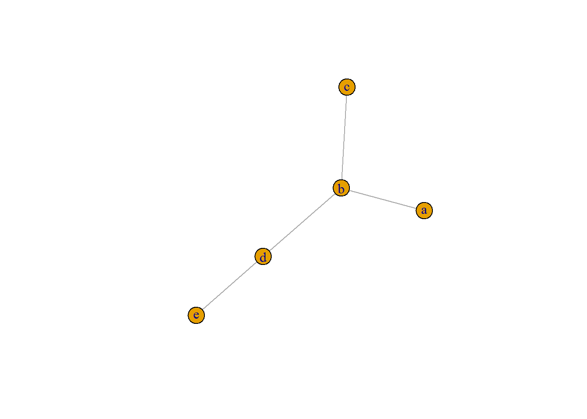

Let’s start with a simple example in which we will estimate the parameters of our model using the simplest estimator available in `gremes: the moment estimator.
Suppose we have a model on five nodes \(V=\{a,b,c,d,e\}\) and the following structure:
library(gremes)
VV<- c("a", "b", "c", "d", "e") # always name the nodes of the tree
EE<- c(1, 2, 2, 3, 2, 4, 4, 5)
g<- graph(EE, directed = FALSE)
g<- set.vertex.attribute(g, "name", V(g), VV)
plot(g)
To each edge \(\{i,j\}\) for \(i,j\in V\) there corresponds a parameter of extremal dependence \(\theta_{ij}\). These four parameters determine the extremal dependence among all variables living on the tree. Our scope will be, given a particular set of data, to estimate the parameter vector \(\theta=(\theta_{ij}; \{i,j\}\in E)\). For that purpose we are going to generate some data using the package.
To create a dataset under the assumptions of the model (see Help) we need to create an HRMtree object and assign a vector of parameters to it. Then the function rHRMtree() samples from that model:
myobj<- HRMtree(g = g)## From HRMnetwork: Edges have been assigned namesx<- c(0.1, 0.3, 0.2, 0.5)
names(x)<- c("e1", "e2", "e3", "e4") # the parameter vector should be named. The names should be the same as the names attached to the edges.
myobj<- setParams(myobj, x)## From setParams.HRMtree: The parameters have been attached to the edges according to their namesX<- rHRMtree(myobj, 1000, noise = TRUE)
head(X)## a b c d e
## [1,] 1.759972 0.7092501 1.676201 0.9955269 0.8790075
## [2,] 2.339825 2.1089709 3.353121 1.7474982 1.2273866
## [3,] 1.754235 1.4671201 2.205957 2.1027381 1.7863237
## [4,] 99.009737 101.0267331 147.526588 95.2169357 46.3729596
## [5,] 136.431109 144.4130372 129.504976 179.0715259 117.2349166
## [6,] 2.507747 1.6893969 1.621765 2.2332948 3.6757986All estimators in gremes are based on locally estimating the parameters and then aggregating the estimates to obtain unique vector of estimates. For that purpose subsets are defined for every node of the tree.
rdsobj<- RootDepSet() # create an empty object of the class 'RootDepSet'
rdsobj<- setRootDepSet(rdsobj, list(c("a", "b"),
c("a", "b", "d", "e"),
c("c", "d", "e"),
c("d", "e", "b"),
c("e", "d")),
c("a", "b", "c", "d", "e")) # assign the subsets and the roots## From setRootDepSet.RootDepSet: The order of the subset must correspond to the order of its corresponding rootrdsobj## $value
## $value[[1]]
## [1] "a" "b"
##
## $value[[2]]
## [1] "a" "b" "d" "e"
##
## $value[[3]]
## [1] "c" "d" "e"
##
## $value[[4]]
## [1] "d" "e" "b"
##
## $value[[5]]
## [1] "e" "d"
##
##
## $root
## [1] "a" "b" "c" "d" "e"
##
## attr(,"class")
## [1] "list" "RootDepSet"We are ready to estimate:
mmeobj<- MME(g) ## From HRMnetwork: Edges have been assigned namesk_ratio<- 0.10
suppressMessages(mmeobj<- estimate(mmeobj, X, rdsobj, k_ratio))
mmeobj$depParams## e1 e2 e3 e4
## 0.01232482 0.07249932 0.05122398 0.22121276The vector above is the estimate of \(\theta\). The true parameter is \((0.1, 0.3, 0.2, 0.5)\), but this is estimate based on one sample and a certain \(k\), the number of the upper order statistics.